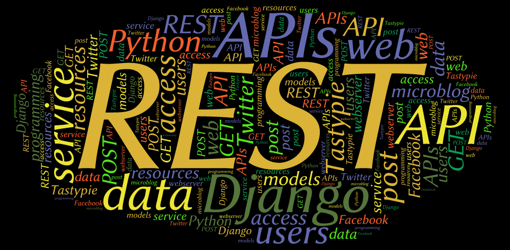

Uma das etapas mais importantes do web-scraping (ou raspagem de dados) é garantir a qualidade das informações extraídas. Devido ao grande volume de dados que podem ser coletados por um spider, é muito complicado analisar tudo manualmente. Porém existem ferramentas para auxiliar nesse processo que vão diminuir muito o trabalho de quem faz esse tipo de análise. Uma dessas ferramentas que vou apresentar neste artigo é o Spidermon.
Aprendendo a Aprender
Há uns dois anos atrás, eu fiz um curso no Coursera chamado Aprendendo a Aprender (em inglês "Learning how to learn"). É um curso de aproximadamente quatro semanas onde os professores apresentam algumas ferramentas mentais para melhorar o seu processo de estudo e memorização.
Neste mesmo curso, durante as aulas, eles te incentivam a compartilhar o assunto aprendido de alguma forma. Esse compartilhamento te ajuda ainda mais a consolidar os conceitos que foram ensinados. Por essa razão resolvi escrever esse artigo. Além disso, por causa do período que estamos passando com o isolamento social, ouvi de muita gente próxima que está fazendo cursos online ou colocando os estudos em dia, aprendendo coisas novas, mas muitas vezes não consegue se concentrar por muitas horas ou tem dificuldades em combater a procrastinação.
Como Criar um Blog de Forma Simples e Rápida com Django
Você quer criar um blog pra espalhar suas ideias na rede?
Quer fazer isso em poucos passos usando Django?
Nas últimas semanas fizemos algumas mudanças no Pythonize e agora o blog está totalmente em Django! Já era uma coisa que eu planejava fazer, afinal um blog que fala sobre Python é bom que seja feito com Python.
Neste post vou contar um pouco como foi a experiência de criar um blog em Django usando o Mezzanine, um CMS muito poderoso que já vem com um admin pronto para blogs.
Continue lendo este artigo para aprender, com detalhes, como instalar o Mezzanine, criar um projeto, configurar e aplicar um tema. No final, ainda vou dar uma dica bônus.
20 artigos e sites essenciais para você aprender Python
Durante nossa caminhada profissional utilizamos diversos recursos para prosseguir, aprender e adquirir experiência.
Neste artigo eu quero compartilhar com você 20 dos principais sites e artigos para aprender Python.
Muitos deles eu li na íntegra, outros os principais tópicos, mas todos tiveram contribuição na construção do meu conhecimento em Python.
Por que você deve ir a uma PythonBrasil
Você quer um lugar pra aprender coisas novas, ficar antenado com novas tecnologias, trocar ideias com um monte de gente legal e interessante? Então você precisa ir a uma PythonBrasil!
No primeiro final de semana de novembro (6 a 9) ocorreu a PythonBrasil [10] em Porto de Galinhas, Pernambuco. Há muitos anos que tenho pensado em ir a uma Python Brasil, mas sempre esbarrei no problema de comprar passagens, além de arcar com os custos de ficar hospedado em uma cidade longe de onde se mora.
Este ano foi diferente, eu poderia finalmente participar de um grande evento da comunidade Python. Depois de tantas palavras de incentivo de amigos e de ler este artigo do Henrique Bastos, eu não poderia deixar de ir.
Como criar uma API REST com Django

Como construir uma API Restful totalmente configurável , funcional e simples ?
Como tornar essa API pública, ao mesmo tempo que protege seus dados?
E como fazer tudo isso usando Django?
Você vai conhecerum pouco do Tastypie, um framework Python muito eficiente que provê uma API (Application Programming Interface, em português: Interface de Programação de Aplicativos) REST totalmente configurável para trabalhar com Django.
Para acompanharo que vamos apresentar aqui, não é necessário ser expert emDjango. Vamos seguir um passo-a-passo bem simples. Se você já sabe como configurar e usar o Django, pode pular para a parte de configuração do Tastypie, ou utilizar este tutorial como lembrete.
Se você quer se aprofundar no estudo de Djangorecomendo os seguintes links: Django Tutorial, Tango with Django.
E para aprender mais sobre RESTful webservices, tem um tutorial bem interessante aqui.
Como Funciona o Tastypie
O Tastypie ajuda você a publicar os models criados no Django, ao mesmo tempo que permite total controle sobre que é exibido ou não. O Tastypie serializa a saída em diversos formatos, incluindo json. Através da criação de objetos 'Resource', o Tastypie implementa formas de obter dados (GET), criar (POST) e modificar (PUT/PATCH) dados e excluir dados (DELETE).
Com estas dicas, você irá construir uma pequena API pra um exemplo de microblog, como o Twitter.
Configurando o ambiente de desenvolvimento
Antes de tudo e qualquer coisa, pra não bagunçar o seu ambiente, instale o virtualenv. O virtualenv é uma ferramenta que cria um ambiente Python separado do seu sistema, evitando maiores dores de cabeça com configurações.
Para criar um ambiente virtual é bem simples, basta passar o comando virtualenv seguido do diretório onde vai ser armazenado o ambiente, por exemplo:
$ virtualenv venv
Pronto, seu ambiente virtual foi instalado na pasta 'venv'. Agora, pra começar a usar é preciso ativar o ambiente:
$ source venv/bin/activate
Você pode perceber que o contexto da sua linha de comando mudou, quer dizer que o ambiente está pronto pra ser usado.
Instalação do Tastypie
Com o ambiente ativado, agora é a hora de instalar o django, em seguida instale algumas dependências do tastypie e ele próprio:
$ pip install django
$ pip install python-mimeparse lxml defusedxml
$ pip install django-tastypie
Pra maiores detalhes de instalação e configuração, você pode olhar na documentação do Tastypie.
Criando um projeto Django
Com tudo instalado, criar um projeto django e uma aplicação dentro do projeto também é bem fácil:
$ django-admin.py startproject webserver
$ cd webserver/webserver
$ python ../manage.py startapp rest_app
Configurando o banco de dados
Vamos utilizar como banco de dados o Sqlite, verifique se no seu arquivo settings.py já está habilitado:
1 2 3 4 5 6 | |
Crie o banco de dados inicial para o Django:
$ python manage.py syncdb
Testando tudo até aqui
Pra testar tudo até aqui, você pode iniciar o servidor:
$ python manage.py runserver
E acessar através da url: http://localhost:8000
pip freeze
O pip tem um comando que cria um registro dos pacotes que foram instalados no ambiente. Isso é útil se você quiser recriar o projeto e ter todos os pacotes nas versões necessárias.
$ pip freeze > requirements.txt
Criando a API
Criando uma nova aplicação
Você cria um nova aplicação com o comando startapp:
$python manage.py startapp rest_app
Lembre-se de atualizar o INSTALLED_APPS no seu arquivo settings.py com a aplicação criada.
Configuração inicial do Tastypie
O primeiro passo é adicionar 'tastypie' em INSTALLED_APPS no arquivo settings.py do seu projeto Django. A documentação do Tastypie diz que essa é a única configuração obrigatória. Para nosso exemplo vai ser suficiente por enquanto.
Eu tive que fazer uma modificação no settings.py por causa de um problema com autenticação. Não sei se será seu caso, só tive que remover uma linha do MIDDLEWARE_CLASSES:
1 2 3 4 5 6 7 8 9 | |
Criando seus models
O model é onde você armazena as informações básicas dos seus dados. Cada model é uma classe Python que herda de django.db.models.Model e que se torna uma tabela no seu banco de dados. Vamos criar alguns models para nossa aplicação.
Você só precisa criar um model para a nossa aplicação que é a classe que vai conter um post no microblog. A classe de usuário podemos obter do próprio Django.
Então, edite o seu arquivo models.py e adicione a seguinte classe:
1 2 3 4 5 | |
Este model tem um usuário associado, a data de publicação do post, o próprio texto e um campo chamado slug, que identifica um determinado post e vai ser útil pra poder fazer buscas.
Pra personalizar o slug, você precisa sobrescrever o método save() do model. Neste caso, vamos pegar somente os 50 primeiros caracteres do post como slug:
1 2 3 4 | |
A classe completa fica assim:
1 2 3 4 5 6 7 8 9 10 11 12 13 14 15 16 17 18 19 | |
Criando Resources
Tudo certo, mas como eu faço para expor meus dados através da API?
Você precisa criar resources.
No Tastypie, resources são os intermediários entre o usuário da sua API e os models de Django.
Crie o arquivo api.py no diretório da aplicação que você gerou anteriormente:
1 2 3 4 5 6 7 | |
Você também tem que criar um resource para a classe de usuário:
1 2 3 4 | |
E associar um usuário a um post. Logo, é precisoadicionar a seguinte linha na classe PostResource:
1 | |
O arquivo api.py completo fica assim:
1 2 3 4 5 6 7 8 9 10 11 12 13 14 15 16 17 18 19 20 | |
A linha authorization = Authorization() serve para que você possa criar e modificar elementos na sua API utilizando o cURL, como vai ser mostrado mais a frente.
Views e URLs
Agora você precisa exibir os resources de alguma forma para que seus usuário tenham acesso à API. Para isso, é necessário criar urls para acessar os seus dados. Edite o arquivo urls.py do seu projeto para que fique assim:
1 2 3 4 5 6 7 8 | |
Você já pode iniciar o runserver e acessar sua API via URLs, por exemplo:
http://127.0.0.1:8000/api/post/?format=json
http://127.0.0.1:8000/api/post/1/?format=json
Acessando a API
Você pode interagir com a API usando o cURL. É possível usar uma ferramenta de gerenciamento de banco SQLite, mas você perde a função de criar o slug automaticamente.
Recuperando os Dados
Para visualizar os dados, ou seja, obter os dados com o curl, o procedimento é semelhante a acessar um URL via browser:
$ curl http://localhost:8000/api/post/1/?format=json
Enviando Dados
Para enviar e criar novos dados, você precisa usar a função POST, como estamos utilizando json, você pode enviar nesse formato da seguinte forma:
curl --dump-header - -H "Content-Type: application/json" -X POST --data '{"text": "Um post bem rápido", "user": "/api/user/1/"}' http://localhost:8000/api/post/
O estado atual do Tastypie
Recentemente, o criador do Tastypie escreveu este artigo comentando sobre o atual status do Tastypie, não só em termos de desenvolvimento como em popularidade.
O Tastypie ainda não possui uma versão 1.0, pois existem alguns pontos que precisam ser melhorados. Um deles é o desempenho quando muitos objetos precisam ser serializados.
Outra questão importante é a incompatibilidade com o Django 1.7 e ele ainda comenta que possui um novo projeto para framework RESTFul, o Restless.
Minha intenção com este artigo é apenas mostrar como é simples criar uma API com Python e Django usando o Tastypie, mas existem outras opções que podem ser exploradas e você pode deixar seu comentário se já teve experiência com alguma delas.
Em / Leia mais >Como Criar Scripts SSH Rapidamente com Python

Às vezes é necessário trabalhar com vários dispositivos ligados em rede, quer sejam computadores, roteadores ou outros tipos de equipamentos.
Em muitas ocasiões precisamos enviar comandos e instruções para estes equipamentos. Isso geralmente é feito através do envio de comandos ou dados via SSH.
Tudo bem entrar em um terminal e enviar um comando ou dois pra um equipamento ou outro.
Mas e se forem milhares de dispositivos interconectados?
Ou se são dezenas ou centenas de instruções em série?
E se estas duas situações ocorrem juntas?
Nesses casos é preciso criar scripts que façam tudo automatizado.
Neste artigo vou compartilhar minha experiência com o Paramiko, um módulo Python que fornece uma interface ao protocolo SSH2.
SSH é um protocolo de rede criptografado que realiza conexão segura entre computadores e permite executar comandos remotamente. Em diversas situações é necessário automatizar o processo de conexão e execução de comandos em um computador remoto.
Como instalar o Paramiko
Para instalar o Paramiko é necessário instalar antes o PyCrypto, que pode ser encontrado via easy_install ou no repositório da sua distribuição Linux. Encontrei algumas dificuldades para instalar o pycrypto no Windows, por sorte existem alguns binários compilados do pycrypto: http://www.voidspace.org.uk/python/modules.shtml#pycrypto
Depois é só instalar o paramiko via easy_install ou procurando no repositório da distro Linux.
O paramiko tem uma classe base que fornece toda a interface para comunicação: paramiko.SSHClient. Para criar um objeto e criar uma conexão com um servidor é bem simples:
1 2 3 | |
Neste exemplo, a função 'connect' está conectando ao servidor SSH local, passando nome de usuário e senha através dos parâmetros 'username' e 'password', respectivamente.
Quando você conecta em um servidor ssh pela primeira vez, uma chave é automaticamente armazenada em disco num arquivo chamado ".ssh/known_hosts" na sua pasta home. Para isto é preciso o usuário, manualmente, aceitar o armazenamento da chave do servidor, confirmando a confiabilidade deste. Para fazermos isso automaticamente através do Paramiko, utilizamos o objeto "set_missing_host_key_policy", passando "paramiko.AutoAddPolicy()" como parâmetro para aceitar automaticamente as chaves. Então, nosso código anterior pode ser modificado:
1 2 3 4 | |
Tenha o cuidado de somente utilizar este artifício com servidores que você confia.
Enviando comandos via ssh
Já aprendemos como conectar em um computador remotamente via ssh. Agora vamos ver como enviar comandos e receber os resultados destes comandos. Isto é feito com o método "exec_command" do SSHClient(). Este método retorna uma tupla de objetos (stdin, stdout, stderr) que você pode ler (no caso do stdout e stderr) ou escrever (stdin). A sintaxe para executar um comando é a seguinte:
1 | |
Que vai enviar o comando 'ls' para listar os arquivos do diretório atual. Para exibir o retorno deste comando podemos ler o conteúdo do objeto stdout e, em seguida, fechar a conexão ssh:
1 2 | |
Em alguns casos precisamos enviar outras informações para execução do comando, como por exemplo uma senha de administrador. Podemos fazer isto escrevendo no objeto stdin.
1 2 3 4 | |
O retorno dos comando pode ser tratado com as poderosas ferramentas de manipulação de string de Python, ou ainda filtradas com expressões regulares, dando ainda mais opções ao programador na hora de criar um script completo. Em outro post darei mais detalhes sobre a utilização do Paramiko.
Em / Leia mais >Como Recuperar Posts do Twitter Rapidamente com Python
Neste post vamos criar um crawler para recuperar tweets públicos. Tweets públicos são aqueles que não necessitam de autenticação, ou seja, não é necessário ter uma conta no Twitter para ler esses tweets.
Com Python, é bem simples recuperar qualquer status do Twitter, para isso, vamos utilizar o pacote python-twitter, que pode ser instalado via setuptools:
$ easy_install python-twitter
Ou, pode ser baixado neste link. Para instalar, extraia o conteúdo, vá até a pasta onde foi extraído e faça:
$ python setup.py build
$ python setup.py install
O python-twitter provê acesso a API do Twitter via código Python.
Para ler a Api e buscar ajuda, faça:
$ pydoc twitter.Status
$ pydoc twitter.User
$ pydoc twitter.DirectMessage
Para começar a utilizar o python-twitter, basta importar o pacote e criar uma instância da classe twitter.Api():
1 2 | |
Então, é possível obter os últimos tweets públicos facilmente com a função GetPublicTimeline, que retorna uma lista contendo em torno de 20 objetos do tipo twitter.Status, o texto do tweet em si está no atributo text:
1 2 3 | |
Agora, para recuperar os 20 últimos tweets de um usuário específico, existe a função GetUserTimeline. Trocando 'user' por um usuário real do twitter no código abaixo, você obtém uma lista semelhante a que foi retornada pela função GetPublicTimeline:
1 2 3 | |
A função GetUserTimeline permite configurar a quantidade de tweets a serem recuperados através do parâmetro count:
1 2 3 4 5 | |
Neste código utilizei a função encode para imprimir caracteres especiais em português.
Você pode encontrar mais detalhes das funções mostradas aqui na documentação da API, basta fazer no terminal:
$ pydoc twitter.Api
O que você achou de usar a API do Twitter com Python? Já tentou outras formas de acessar a API? Deixe seu comentário logo abaixo!
Em / Leia mais >6 dicas simples para o Vim ser uma IDE perfeita pra Python
Qual programador não procura um ambiente de desenvolvimento que seja simples, amigável e funcional?
Muitos acabam voltando ao bloco de notas por sua simplicidade.
Neste post você vai explorar o Vim, um editor de texto que roda na linha de comando e é a paixão de muitos desenvolvedores.
Em um post anterior eu falei sobre como habilitar o auto-complete no vim pra código em python. Neste post vamos um pouco mais além nessas configurações
Recentemente encontrei um post num blog com dicas mostrando como tornar o vim numa IDE completa pra Python.
Testei algumas funcionalidades que tornaram o vim bem amigável pra programar e gerenciar código. Fiz todos os testes no Ubuntu, em outros sistemas Linux deve ser similar. Neste post vou passar essa experiência que tive configurando e usando o vim para criar código python.
Antes de tudo, instale os pacotes vim-full e vim-python se estiverem disponíveis nos repositórios do seu sistema. As configuração no vim são feitas num arquivo chamado vimrc, nas últimas versões do Ubuntu ele fica localizado na pasta /etc/vim e precisa ser root para modificá-lo.
1. Destaque de código no Vim
Para habilitar highlighting (destaque do código) no vim adicione a seguinte linha no arquivo vimrc:
syntax on
No seu arquivo vimrc pode ser que esta linha venha comentada e acompanhada das seguintes linhas:
if has("syntax")
syntax on
endif
Basta descomentar estas linhas que o highlighting ficará disponível.
2. Indentação de código
Como a indentação em Python é fundamental, sem ela podem ocorrer erros no código, uma ide que tenha auto-indentação é ideal. No arquivo vimrc procure as seguintes linhas e descomente ou adicione se elas já não estiverem no arquivo:
" Habilita auto-indentação
if has("autocmd")
filetype plugin indent on
endif
3. Número de linhas
Para exibir o número das linhas no vim adicione o seguinte no vimrc:
" Habilitar numero de linhas
set number
" Alternar exibição de numero de linhas (facilita na hora de copiar)
nnoremap :set nonumber!: set foldcolumn=0
O resultado é este:

4. Navegação pelo código
Uma funcionalidade muito útil é a navegação pelo código. Com esta ferramenta habilitada é possível ver todas as classes e funções presentes no seu código e poder pular automaticamente pra qualquer uma delas.
Primeiro, é preciso instalar o pacote exuberant-ctags, disponível no repositório com este mesmo nome. Depois, baixe o taglist, que é um plugin do vim. Coloque o arquivo taglist.vim na pasta \~/.vim/plugin e o taglist.txt na pasta \~/.vim/doc, vá até esta última pasta, inicie o vim e rode :helptags. (com '.' no final) e já estará instalado.

Agora é preciso fazer algumas alterações no vimrc:
" Exibe nome da função
let g:ctags_statusline=1
" Inicializar script automaticamente
let generate_tags=1
" Exibe os resultados em uma janela vertical
let Tlist_Use_Horiz_Window=0
" Atalho para exibição da Taglist
nnoremap TT :TlistToggle
map :TlistToggle
" Configurações para exibição da Taglist
let Tlist_Use_Right_Window = 1
let Tlist_Compact_Format = 1
let Tlist_Exit_OnlyWindow = 1
let Tlist_GainFocus_On_ToggleOpen = 1
let Tlist_File_Fold_Auto_Close = 1
A Taglist estará disponível através do atalho F4 ou digitando "TT" (dois 't' maiusculos) As últimas configurações servem para exibir uma janela vertical à direita mostrando a taglist e ganhar foco quando é chamada.
5. Ocultar Código
Quando o seu código começa a ter muitas funções e classes fica difícil ter uma visão geral do que está disponível no código. A maioria das IDE's possuem uma funcionalidade para ocultar parte do código e mostrar somente a assinatura ou definição de classes e funções.
No Vim isso é possível através de um plugin. Para instalá-lo baixe o arquivo neste link, crie uma pasta chamada ftplugin dentro da pasta \~/.vim e copie o plugin para a pasta ftplugin. A tecla 'F' (

6. Project Explorer
Essa é uma das principais funções de uma IDE: organizar seu projeto. No Vim é preciso instalar o plugin NerdTree, que pode ser baixado aqui. Para instalar basta extrair o conteudo do arquivo .zip na pasta \~/.vim. Rode :helptags. (com '.' no final) e rode :help NERD_tree.txt para ver o arquivo de ajuda. Pra utilizar o plugin digite :NERDTree e será aberta uma janela com o conteúdo da pasta atual.
Na página de scripts do vim, você pode encontrar outros plugins de Python para o vim. Se você testar algum outro plugin ou tiver uma funcionalidade interessante que eu não comentei no post, deixe sua experiência nos comentários.
Em / Leia mais >Como criar parsers HTML poderosos com BeautifulSoup

Neste post você vai aprender como criar um parser pra recuperar informações de páginas HTML utilizando o BeautifulSoup. O BeautifulSoup pode ser usado para arquivos HTML ou XML, com ele fica muito simples navegar e buscar textos em páginas HTML. Uma grande vantagem da BeautifulSoup é que ela consegue criar uma estrutura mesmo com páginas html mal formatadas, facilitando o trabalho do programador.
Instalando o BeautifulSoup
Você pode fazer a instalação via pip ou easy_install. Também estão disponíveis pacotes em diferentes distribuições Linux.
Inicie o interpretador Python para testar os códigos que vamos apresentar a seguir.
Para processar páginas HTML, importe o BeautifulSoup da seguinte forma:
from BeautifulSoup import BeautifulSoup
Se você for processar arquivos XML:
from BeautifulSoup import BeautifulStoneSoup
Você pode também consultar a documentação do BeautifulSoup aqui.
Criando o parser
Por enquanto vamos processar apenas páginas html. Vamos usar a biblioteca urllib2 para recuperar uma página html.
import urllib2
pagina = urllib2.urlopen("http://www.globo.com").read()
Isso vai criar uma string com todo o código html da página. Então, para criar o parser basta:
soup = BeautifulSoup(pagina)
É possível transformar esse objeto BeautifulSoup em string com o método prettify, que manipula o código bruto adicionando quebra de linha e espaçamento recriando a estrutura do código html.
soup.prettify()
Para listar todos os links da página recuperada, usamos o método findAll:
links = soup.findAll('a')
Neste código, 'links' é uma lista contendo objetos do tipo Tag da biblioteca BeautifulSoup (class BeautifulSoup.Tag). Vamos agora, listar somente os links (tirando qualquer texto ou marcação) que estão nesses objetos Tag:
for link in links:
print link['href']
Para recuperar somente uma área da página, é possível usar o método find com o parâmetro id, por exemplo:
colunas = soup.find(id="glb-area-colunas")
linkscol = colunas.findAll('a')
for link in linkscol:
print link['href']
A biblioteca BeautifulSoup facilita muito na hora de criar parsers e crawlers para páginas html ou xml. Usada junto com o urllib2 são poderosos aliados na recuperação de informação na web.
Em / Leia mais >